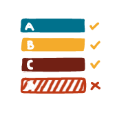
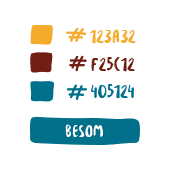
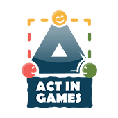
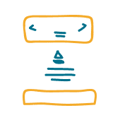

Web designer
Fort d'un Bachelier en sciences politiques et d'un Master en coopération internationale, j’ai accumulé stages et bénévolats dans le secteur ONG durant 3 ans, en Belgique et en Bolivie.
Par la suite, j'ai voulu me former dans un secteur faisant davantage appel à ma créativité. J’ai donc entrepris une formation en production de produits multimédias en alternance avec un stage de 2 ans au sein de l'entreprise Hello Agency située à Bruxelles.
Je suis à présent web designer ainsi que développeur front-end et actuellement disponible pour un emploi en agence.
2 cas représentatifs de mon travail
Act in games
Projet
Act in games est une maison d’édition de jeux de société bruxelloise. Elle crée des jeux comme vecteurs de communication et propose aux entreprises la création de jeux autour d'une thématique personnalisée comme outil de marketing ou pour marquer un événement en diffusant des valeurs clés.
Réalisations
J'ai réalisé le design et l’intégration de leur site web. Ceci comprend la création d’un thème wordpress responsive et dynamique afin de garantir l’autonomie du client dans l’ajout de son contenu.
Les différents éléments suivants ont également été réalisés par mes soins :
Cahier des charges
Charte graphique
Logo
Wireframe
Cartes de visite
Design
Page d'accueil
Page d'accueil
Sur la page d’accueil du site d'Act in games, un défilement des jeux principaux sur toute la longueur de l’écran permet au visiteur de se rendre directement sur les pages des jeux concernés.
Ensuite, 3 sections viennent introduire les différents types d'édition ainsi que l’offre de services de la maison d’édition, le tout dans un style coloré et ludique.
Jeux
Jeux
La page dédiée à chaque jeu accueille le visiteur avec l'illustration principale du jeu en arrière-plan et les logos des récompenses du jeu si celui-ci a été primé.
Le visiteur trouvera également toutes les informations relatives au jeu : règles, visuels et liens vers les distributeurs, ainsi que les personnes ayant participé à sa réalisation et des vidéos d'explications.
Actualités
Actualités
Cette page permet au visiteur de retrouver toute l'actualité concernant Act in games, comme l'agenda des différents événements ou festivals auxquels la maison d'édition participe, ainsi que toutes sortes d'informations : la sortie d'un nouveau jeu ou encore une offre d'emploi au sein de la maison d'édition.
Acteurs
Acteurs
Thibaut Quintens, le créateur d'Act in games, souhaitait véritablement mettre en avant les personnes qui ont contribué créativement à la réalisation des jeux de la maison d'édition.
Tout en gardant un design coloré et cohérent avec l'identité du site, cette page offre un maximum d'informations réparties sur 3 accordéons pour faciliter la lecture.
Édition
Édition
La page « édition » vient décrire l'offre de la maison d'édition de jeux Act in games en expliquant les 3 types d'édition de jeux que la maison pratique.
Toujours dans un style ludique, l'objectif est de faire en sorte que le visiteur comprenne au maximum la portée de l'offre d'Act in games et prenne éventuellement contact en vue de créer un partenariat.
Wordpress / dynamique / responsive
Afin d'assurer l’autonomie du client dans la mise à jour du contenu de son site, notamment lors de l’édition de nouveaux jeux, un thème wordpress dynamique et responsive (fonctionnant sur différents supports tels que les smartphones ou les PC) a été développé.
De nos jours, avoir un site responsive est devenu incontournable, en particulier pour un meilleur référencement dans les moteurs de recherches et pour toucher un public le plus large possible.
Peterman
Newsletter
Durant mes 2 années chez Hello Agency, j’ai entre autres été chargé de la réalisation de plusieurs newsletters pour Peterman, newsletters responsives et fonctionnant sur l’ensemble des principaux services de messagerie web.
Projet
L’objectif était de donner un feedback aux personnes ayant participé aux événements organisés lors de fêtes populaires belges et de les orienter vers la page Facebook de Peterman pour y voir les photos réalisées.
Projet
L'objectif était de créer des « couvertures » Facebook pour introduire les nouvelles variétés de bouteilles Peterman.
J'ai régulièrement réalisé certains visuels (statiques ou animés) pour le feed de la page Facebook de la marque.